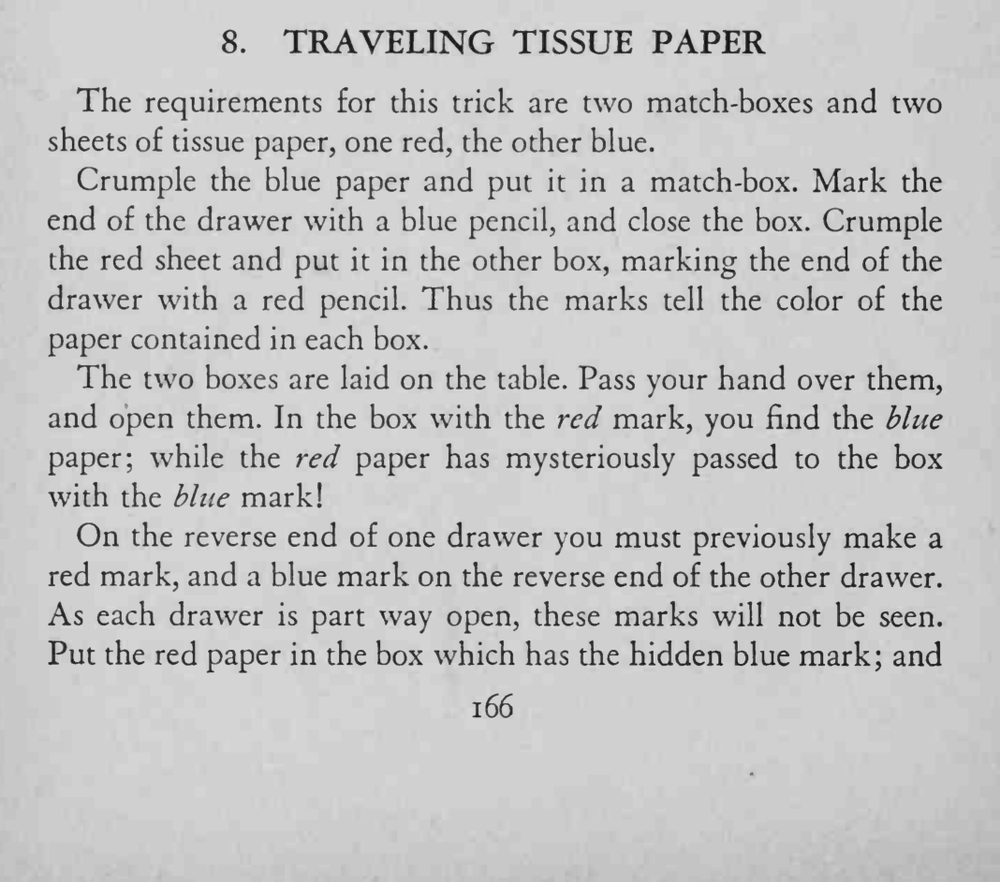
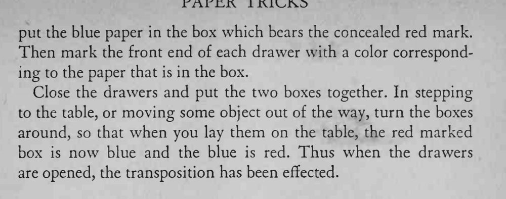

两只火柴盒分别装着红纸和蓝纸，手一挥再打开，红纸蓝纸居然换了盒子。
正反两面记号要一一对应，转身换手时别让标记露出来。


The requirements for this trick are two match-boxes and two sheets of tissue paper, one red, the other blue. Crumple the blue paper and put it in a match-box. Mark the end of the drawer with a blue pencil, and close the box. Crumple the red sheet and put it in the other box, marking the end of the drawer with a red pencil. Thus the marks tell the color of the paper contained in each box. The two boxes are laid on the table. Pass your hand over them, and open them. In the box with the red mark, you find the blue paper; while the red paper has mysteriously passed to the box with the blue mark! On the reverse end of one drawer you must previously make a red mark, and a blue mark on the reverse end of the other drawer. As each drawer is part way open, these marks will not be seen. Put the red paper in the box which has the hidden blue mark; and put the blue paper in the box which bears the concealed red mark. Then mark the front end of each drawer with a color corresponding to the paper that is in the box. Close the drawers and put the two boxes together. In stepping to the table, or moving some object out of the way, turn the boxes around, so that when you lay them on the table, the red marked box is now blue and the blue is red. Thus when the drawers are opened, the transposition has been effected.